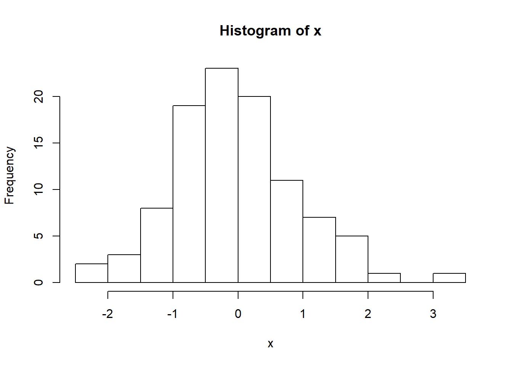

10 Loops and Functional Programming
10.1 Intro
We have covered the foundamentals you need to complete standard statistical analyses and data processing in R, as well as to document your results. Now, we cover some more advanced techniques that can be used to make your code more efficient: loops (including the apply functions) and functional programming. Using these two tools, you can omit redundant code and make your code easier to read, quicker to write, and limit human errors when writing it. We also cover how to generate values from specified distributions, which is important when running simulation studies.
10.2 Loops
Loops are a way of having R do repetitive tasks automatically in a sequential format. These are also called for loops since you specifiy a set of indicies/numbers, and R does the tasks for each value in this set, in order of the first number in the set to the last. Their format is the following:
for(i in X){ … }
where i keeps track of the index, X is the set of indicies to use, and … is where you place the code to be run for each. You can use any string (without spaces) of unquoted letters instead of i. Consider the simple example:
## [1] 2
## [1] 3
## [1] 4
## [1] 5
## [1] 6
## [1] 7
## [1] 8
## [1] 9
## [1] 10
## [1] 11You can see R places the current value of i, adds 1 to it, then prints out this value, and moves to the next value. The code 1:10, or seq(1,10), creates a sequence from 1 to 10, by 1. If you wanted a sequence by 1 to 10 by 2, use seq(1,10,2), etc.
## [1] 2
## [1] 4
## [1] 6
## [1] 8
## [1] 1010.2.1 Example 1: Running many regression models
Next we consider a less trival example. Suppose we have a number of regression models to fit, with all variables in the regression models from a single dataset. We run some logistic regression models where ASD status at 24 months (positive or negative) is the outcome and each model uses a different predictor (AOSI, Mullen Composite Score, and Mullen Cognitive T Score as examples) value at 12 months. To do this, we create a list of formulas which represents the models we wish to fit, and then run glm() on each element of the list using a loop. We save the output from each model fit in another list. This is a good general format for using loops to repeat analyses where only minor components are changed; create a list or vector or matrix to hold the different components and create a list to hold the output from each run of the loop.
full_data <- read.csv("Data/Cross-sec_full.csv", stringsAsFactors=FALSE, na.strings = c(".", "", "", " "))
full_data <- full_data %>%
mutate(ASD_Status=ifelse(GROUP=="HR_ASD", "ASD_Pos",
ifelse(is.na(GROUP)==1, NA, "ASD_Neg")) %>%
factor() %>%
relevel(ref="ASD_Neg"))
# Create list of formulas
frmlas <- list(ASD_Status~V12.aosi.total_score_1_18,
ASD_Status~V12.mullen.composite_standard_score,
ASD_Status~V12.mullen.cognitive_t_score_sum)
output <- list() # create empty list to hold output
for(i in 1:length(frmlas)){
output[[i]] <- glm(frmlas[[i]], data = full_data, family=binomial)
names(output)[i] <- capture.output(frmlas[[i]]) # name each entry in output list for each identification
}
# Let's check the results from the first model
summary(output[[1]])##
## Call:
## glm(formula = frmlas[[i]], family = binomial, data = full_data)
##
## Deviance Residuals:
## Min 1Q Median 3Q Max
## -1.7800 -0.5936 -0.4563 -0.3813 2.3804
##
## Coefficients:
## Estimate Std. Error z value Pr(>|z|)
## (Intercept) -2.77241 0.24331 -11.394 < 2e-16 ***
## V12.aosi.total_score_1_18 0.18760 0.03201 5.861 4.59e-09 ***
## ---
## Signif. codes: 0 '***' 0.001 '**' 0.01 '*' 0.05 '.' 0.1 ' ' 1
##
## (Dispersion parameter for binomial family taken to be 1)
##
## Null deviance: 443.80 on 511 degrees of freedom
## Residual deviance: 407.84 on 510 degrees of freedom
## (75 observations deleted due to missingness)
## AIC: 411.84
##
## Number of Fisher Scoring iterations: 4##
## Call:
## glm(formula = frmlas[[i]], family = binomial, data = full_data)
##
## Deviance Residuals:
## Min 1Q Median 3Q Max
## -1.5793 -0.6063 -0.4554 -0.3391 2.4886
##
## Coefficients:
## Estimate Std. Error z value Pr(>|z|)
## (Intercept) 3.752058 0.905505 4.144 3.42e-05
## V12.mullen.composite_standard_score -0.055758 0.009438 -5.908 3.47e-09
##
## (Intercept) ***
## V12.mullen.composite_standard_score ***
## ---
## Signif. codes: 0 '***' 0.001 '**' 0.01 '*' 0.05 '.' 0.1 ' ' 1
##
## (Dispersion parameter for binomial family taken to be 1)
##
## Null deviance: 451.91 on 525 degrees of freedom
## Residual deviance: 413.36 on 524 degrees of freedom
## (61 observations deleted due to missingness)
## AIC: 417.36
##
## Number of Fisher Scoring iterations: 5##
## Call:
## glm(formula = frmlas[[i]], family = binomial, data = full_data)
##
## Deviance Residuals:
## Min 1Q Median 3Q Max
## -1.7160 -0.5943 -0.4621 -0.3431 2.4867
##
## Coefficients:
## Estimate Std. Error z value Pr(>|z|)
## (Intercept) 3.555768 0.870239 4.086 4.39e-05 ***
## V12.mullen.cognitive_t_score_sum -0.026943 0.004541 -5.934 2.96e-09 ***
## ---
## Signif. codes: 0 '***' 0.001 '**' 0.01 '*' 0.05 '.' 0.1 ' ' 1
##
## (Dispersion parameter for binomial family taken to be 1)
##
## Null deviance: 451.91 on 525 degrees of freedom
## Residual deviance: 412.94 on 524 degrees of freedom
## (61 observations deleted due to missingness)
## AIC: 416.94
##
## Number of Fisher Scoring iterations: 5This avoids having to write three glm function calls (though you still have to write the three formulas), and easily collects the output into a list to improve organizaton of the results. You can use the above looping method with any analysis you wish, including data visualization with plots.
We can do a bit more with this regression example. Currently, each model’s output is saved as a separate entry in the list entitled “output”. It is often useful to summarize all of these results into a single dataset, with column representing the model being fit, the regression parameetrs estimate for each covariate, corresponding confidence intervals and p-values, etc. We can modify our loop to accomplish this task.
# Create list of formulas
frmlas <- list(ASD_Status~V12.aosi.total_score_1_18,
ASD_Status~V12.mullen.composite_standard_score,
ASD_Status~V12.mullen.cognitive_t_score_sum)
output <- list() # create empty list to hold output
output_df_list <- list() # create empty list to hold regression output as dataset
for(i in 1:length(frmlas)){
output[[i]] <- glm(frmlas[[i]], data = full_data, family=binomial)
names(output)[i] <- capture.output(frmlas[[i]]) # name each entry in output list for each identification
# Now, create dataset for each regression model's output. Recall data frames are R objects which are the standard format for dataset. Using the data.frame() function, a data frame is created, which each argument being a column/variable in the dataset. Using ".." = to specify the name of the column/variable. When happens when you remove ".." = from each argument?
output_df_list[[i]] <- data.frame("Model"=capture.output(frmlas[[i]]),
"Covariate"=names(output[[i]]$coefficients),
"Beta_Estimate"=output[[i]]$coefficients,
"CI_95_LL"=confint(output[[i]])[,1],
"CI_95_UL"=confint(output[[i]])[,2],
"P_val"=summary(output[[i]])$coefficients[,4])
# Look at output_df_list[[i]]. Can see we have row labels which are not useful. This is because output[[i]]$coefficients has these row names, which were carried over when creating the data frame. We need to remove those, i.e. set them to NULL
rownames(output_df_list[[i]]) <- NULL
}
# Let's paste together all of these separate data frames into a single one. Note that we are pasting them together row-wise so we need to use rbind(). However, we also have to use the function do.call(). Why can we not simply use rnind(output_df_list)? What exactly does do.call() do? Hint: look at documentation for function using command ?do.call .
output_df_full <- do.call("rbind", output_df_list)
output_df_full## Model
## 1 ASD_Status ~ V12.aosi.total_score_1_18
## 2 ASD_Status ~ V12.aosi.total_score_1_18
## 3 ASD_Status ~ V12.mullen.composite_standard_score
## 4 ASD_Status ~ V12.mullen.composite_standard_score
## 5 ASD_Status ~ V12.mullen.cognitive_t_score_sum
## 6 ASD_Status ~ V12.mullen.cognitive_t_score_sum
## Covariate Beta_Estimate CI_95_LL
## 1 (Intercept) -2.77241345 -3.26943791
## 2 V12.aosi.total_score_1_18 0.18759712 0.12585158
## 3 (Intercept) 3.75205842 2.00272798
## 4 V12.mullen.composite_standard_score -0.05575794 -0.07478838
## 5 (Intercept) 3.55576763 1.87727181
## 6 V12.mullen.cognitive_t_score_sum -0.02694335 -0.03611077
## CI_95_UL P_val
## 1 -2.31342914 4.457601e-30
## 2 0.25173696 4.594861e-09
## 3 5.56455358 3.418860e-05
## 4 -0.03767386 3.471997e-09
## 5 5.30061841 4.389367e-05
## 6 -0.01825424 2.959601e-0910.2.2 Example 2: The Apply Functions
R has series of functions which allow one to easily run loops over various dimensions of an object without having to write out the for loop explicitly. In this section, we discuss apply(), lapply(), and sapply() (there are others you may find useful as well which are not discussed here). Each of these works best with a specific type of object; apply() for vectors and matricies, lapply() for lists, and sapply() for lists or data frames.
The apply() function applies a specified function to each row, column, or entry of a vector or matrix. For example, suppose we want to add up the values in each column of a matrix (that is, apply the function sum() to each column). We can do this easily using apply(X, MARGIN=2, FUN=sum) where X is the matrix object. If we wanted to apply the function to each row, we would specify MARGIN=1, and to apply the function to each entry use MARGIN=c(1,2). You can use a user-created function as well.
## [1] 9 9 9 9## [1] 12 12 12## [1] 18 18 18 18## [1] 24 24 24The lapply() and sapply() functions work similarly, but are designed for lists by applying a function to each component of the list. With lists, we do not have multiple dimensions, so the main arguments for lapply() and sapply() are X= and FUN= . The difference between theses two is that lapply() will print the output as a list, while sapply() will print the output in the same format as the input. Since a data frame is actually a list (with the columns/variables making up the components of the list), both will work on data frames. However, sapply() will keep the output as a data frame while lapply() will output a list. Recall at the end of Chapter 2, we used sapply() to print out the type for each each column in a data frame; you can also use it to print out various statistics for each column simply by specifying the corresponding function.
10.3 Functional Programming
Functional programming is a concept that can be used frequently in standard statistical analyses and thus can be very helpful is making your code more efficient. We have already seen functions in R and how to use them throughout these tutorials; essentially, every computation that we have done has made use of a pre-built R function. However, it is very easy to create your own function. This can allow you to complete tasks which require lines of code and change a small aspect of these tasks with a single function call.
To create a function, you use the following syntax:
foo <- function(x, y){ … }
foo is some name for your function, x and y (and more if you need them) are the function’s arguments, and … is the code that executes when you call the function. You can essentially use any non-quoted string of characters (again, without spaces) as argument names instead of x, y, etc. (there are some restrictions). R will automatically take the output from the last line of code in the function and have it be the output when you call your function.
Consider the following trivial example where we write a function which adds 3 numbers and the divides them by 2.
## [1] 2We can see that the output from this sum and division is the last line in the function’s code and is also printed out by the function call. What happens if the last line of the function’s code does NOT output something?
## [1] 2We can see then nothing is output by the function. However, if we save the function call as an object (t in this case), then even though the function does not print out anything in it’s code, the value stored in the last line of the function is stored in object t when the function is called. In general, you can forget about this difference by simply having the last line of your function call be the printing of the output of interest.
10.3.1 Example: Regression Analysis as a Function Call
Let us try a useful example of function calls. Suppose we wanted to run a lengthy linear regression analysis where we will
- Fit the regression model
- Create a scatterplot with the line of best fit
- Check the assumptions
and we want to run a few such analyses for a set of regression models. We will do this by creating a single function to do all of these analyses and then change the model used with some arguments. We then run two linear regression analyses, each one computated using a single function call. As a result, we avoid repetitive code which can lead to typographic errors.
lm_analysis <-function(model){
model_fit <- lm(model, data=full_data)
scatterplot <- ggplot(data=full_data,
mapping=aes_string(y=as.character(model[2]),
x=as.character(model[3])))+
geom_point()+
geom_smooth()
# Create dataset of residuals and fitted values from model fit; needed for data= argument for later ggplot
residual_fitted_data <- data.frame(residual=model_fit$residuals,
fitted_value=model_fit$fitted.values)
residual_fitted_plot <- ggplot(data=residual_fitted_data,
mapping=aes(y=residual,
x=fitted_value))+
geom_point()
# Can create QQ plot using qqnorm() from previous tutorial or using ggplot
# Use argument sample= to place residuals
qqplot <- ggplot(data=residual_fitted_data, mapping=aes(sample=residual))+
geom_qq()+
geom_qq_line()
# Save everything as a list
output <- list(model=as.character(model),
fit_obj=model_fit,
residual_by_fitted_value_plot=residual_fitted_plot,
qqplot=qqplot)
output # Have function return output when called
}
# Now call function and store in object; run linear regression model with AOSI total score at 12 months as outcome and Mulen expressive language as predictor
test_function <- lm_analysis(model=V12.aosi.total_score_1_18 ~ V12.mullen.cognitive_t_score_sum)
test_function$fit_obj # prints out the fit object from lm()##
## Call:
## lm(formula = model, data = full_data)
##
## Coefficients:
## (Intercept) V12.mullen.cognitive_t_score_sum
## 12.83863 -0.03895# Can easily run a different model; avoids repetitive code
test_function <- lm_analysis(model=V12.mullen.composite_standard_score ~ V12.aosi.total_score_1_18)
test_function$fit_obj # prints out the fit object from lm()##
## Call:
## lm(formula = model, data = full_data)
##
## Coefficients:
## (Intercept) V12.aosi.total_score_1_18
## 106.653 -1.116Note the use of aes_string() here instead of aes(). This illustrates an important concept when trying to do this form of functional programming; you will often have to use different versions of functions you usually use. The reason is the following. Suppose we want to pass in variables x and y from some dataset. You may think you can simply use xval=x and yval=y in your created function, where xval and yval are the names of this function’s arguments. However, this will generally result in an error since x and y are not separate objects, but are tied to the object data. Thus, you could use “x” and “y” instead and use a function that evaluates strings as R objects within your dataset. This is what aes_string() does. When using dplyr functions in your function, you will also have to do similar adjustments. Generally, this means using the functions select_(), filter_(), etc. though search online for more help and information on this concept. For the exceptionally curious reader about this concept, called evaluation, please see Hadley Wickham’s excellent book Advanced R.
10.4 Simulation Studies
When developing or learning new statistical methods, it is often necessary to implement these methods on simulated datasets. Simulated datasets are composed of values which are generated by the user based on specified distributions. As a result, the user knows the properties of the data they are analyzing and can discern how well the method of interest estimates such properties.
Suppose we wanted to generate a sequence of binary values (0 or 1). A variable that is either 0 or 1 has a Bernoulli distribution. In R, to generate \(n\) independent values from a Bernoulli distribution, you can use the rbinom(n, size, prob) function with size=1. The argument prob controls the probability of a 1 (“success”). When calling this function, R will output a vector of size \(n\) which contains the values. We generate \(n=10\) Bernoulli draws below with a 0.5 probability of a 1 for each draw.
## [1] 5An extension of this distribution is the Binomial distribution, which models the number of “successes” (1s) among a set of independent attempts. One can think of this as modeling the number of positive diagnoses among subjects (“successes”) in a sample (“attempts”), assuming the subjects’ diagnoses are independent. Note that for a single attempt, the Bernoulli and Binomial distribution are the same. In R, to generate \(n\) independent values from a Binomial distribution, you can use the rbinom(n, size, prob) function, where size reflects the number of attempts and prob reflects the probability of a “success” for each of these attempts. We generate \(n=10\) independent Binomial values below with a 0.5 probability of a 1 for each attempt and 10 attempts per value (i.e., 10 trials with 10 subjects in each trial).
## [1] 5.5There are many distributions you can chose from when generating continuous values. For example, suppose we wanted to generate n independent values from a normal distribution with mean \(\mu\) and standard deviation \(\sigma\). In R, this is done using **rnorm(n, mean=\(\mu\), and sd=\(\sigma\)). Below, we use \(n=100\), \(\mu=0\), \(\sigma=1\).

For functions corresponding to distributions such as Uniform, Gamma, Poisson, etc., please consult the R documentation. Now, we consider two simple simulation examples; 1) simulated data with two groups, each of which having normally distributed data but with different means and/or standard deviations and 2) simulating data under a linear regression model. First, suppose we have subjects from two groups (~100 subjects in each group) denoted by 0 and 1 respectively. Suppose we have data from another variable for all subjects, where this variable is normally distributed with standard deviation of 1 but group 0 has a mean of 0 and group 1 has a mean of 5. We can simulate this data as follows:
## [1] 95Y <- rep(NA, n) # create object to hold normally distributed variable
Y[group==0] <- rnorm(n-sum(group), 0, 1) # Replace Y indicies of those in group 0 with mean 0, normally distributed values
Y[group==1] <- rnorm(sum(group), 5, 1) # Replace Y indicies of those in group 1 with mean 5, normally distributed values
hist(Y) # histogram for entire sample; notice that it is bimodal
data <- data.frame(Y, factor(group))
ggplot(data=data, mapping = aes(x=Y, fill=group))+
geom_histogram()
As a second example, consider outcome variable \(Y\) and predictor \(X\) where \(X\) is normally distributed with mean 0 and standard deviation 1. We generated \(Y\) using the following model: \(Y=1+2X+\epsilon\) where \(\epsilon\) is normally distributed with mean 0 and standard deviation 2. This model for \(Y\) is an example of the usual linear regression model discussed in Chapter 8. We generate a sample of size 200 from these distributions below.
n <- 200
X <- rnorm(n, 0, 1) # predictor values
E <- rnorm(n, 0, 2) # Error values
Y <- rep(1,n)+2*X+E # Outcome values
data <- data.frame("Y"=Y, "X"=X)Now, let us fit a linear regression model to this data with \(Y\) as the outcome and \(X\) as the sole predictor. We will output the estimated regression parameters (the slope and intercept) and look at the distribution of the residuals using a QQ plot. For more detail on linear regression models and residuals, please see Chaper 8.
##
## Call:
## lm(formula = Y ~ X, data = data)
##
## Residuals:
## Min 1Q Median 3Q Max
## -5.9854 -1.3656 -0.0281 1.5406 5.3681
##
## Coefficients:
## Estimate Std. Error t value Pr(>|t|)
## (Intercept) 1.0317 0.1443 7.152 1.62e-11 ***
## X 2.1575 0.1436 15.025 < 2e-16 ***
## ---
## Signif. codes: 0 '***' 0.001 '**' 0.01 '*' 0.05 '.' 0.1 ' ' 1
##
## Residual standard error: 2.037 on 198 degrees of freedom
## Multiple R-squared: 0.5328, Adjusted R-squared: 0.5304
## F-statistic: 225.8 on 1 and 198 DF, p-value: < 2.2e-16
As expected, we see that when we fit a linear regression model to this data, the estimated intercept and slope are very close to the corresponding true values and the predicted residuals appear to be approximately normally distributed.
10.4.1 Setting the Seed: Reproducibility in Simulation Studies
You will notice that each time you generate data from a specified distribution, R will output different values as you would expect. However, this makes reproducing the analysis from the simulated data impossible as the data changes everytime you run your script. In order to keep the dataset the same each time, you need to specify the seed that R uses when generating the data. For detail on seeds and on how R and other programs actually simulate the data from a specified distribution, please see https://en.wikipedia.org/wiki/Random_number_generation.
In R, to set your seed manually, use the function set.seed(x) where x is the seed value. The seed value must be an integer. After the seed is held constant, you will see that the generated datasets remain the same, as shown below. You will see that the simulated data changes as you change the seed. As a result, do not try different seeds and then pick the one that gives the “best” results in your analysis. Pick one number and stick with it anytime you generate data to avoid biasing the analysis.
## [1] -0.1267782 1.0592069 -1.1673960 -0.5576436 1.4881199 1.3586658
## [7] 1.1632145 1.6615239 0.2040310 -0.5818837## [1] 0.55520406 1.05872313 2.41363327 -1.96498233 0.27323570
## [6] 0.65479458 -0.05459866 -1.55782225 0.74150089 -0.77908574## [1] -1.4805676 1.5771695 -0.9567445 -0.9200052 -1.9976421 -0.2722960
## [7] -0.3153487 -0.6282552 -0.1064639 0.4280148## [1] -1.4805676 1.5771695 -0.9567445 -0.9200052 -1.9976421 -0.2722960
## [7] -0.3153487 -0.6282552 -0.1064639 0.4280148## [1] 0.2167549 -0.5424926 0.8911446 0.5959806 1.6356180 0.6892754
## [7] -1.2812466 -0.2131445 1.8965399 1.7768632set.seed(4)
rnorm(10, 0, 1) # same value after setting the seed but different values compared to previous seed value as expected## [1] 0.2167549 -0.5424926 0.8911446 0.5959806 1.6356180 0.6892754
## [7] -1.2812466 -0.2131445 1.8965399 1.7768632## [1] 0.56660450 0.01571945 0.38305734 -0.04513712 0.03435191
## [6] 0.16902677 1.16502684 -0.04420400 -0.10036844 -0.28344457